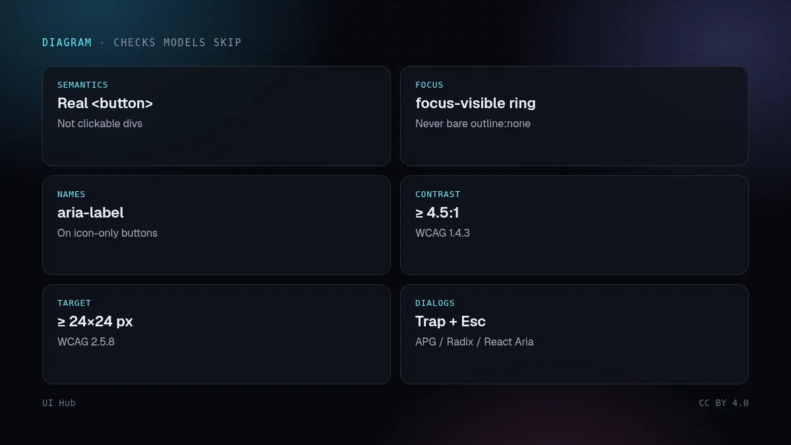
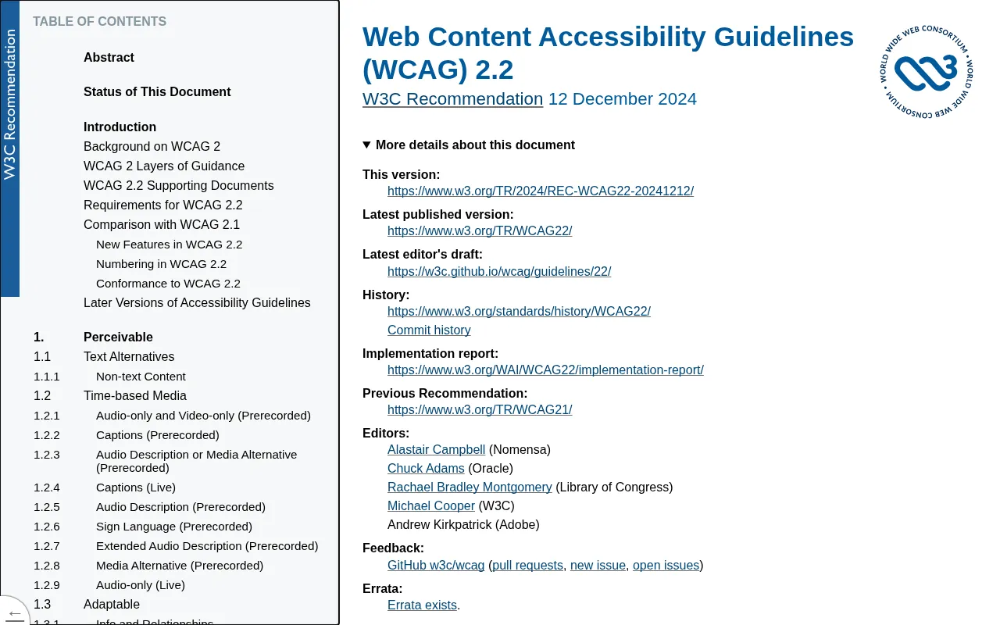
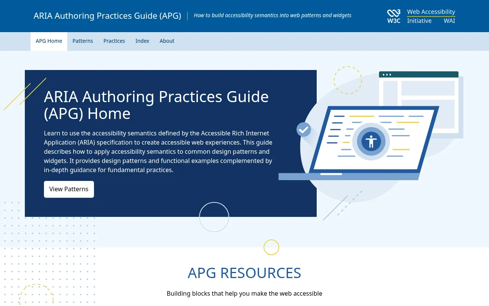

模型优化的是截图里看得到的东西。焦点顺序、可访问名称、键盘操作和实时播报区域在截图里都看不到，所以它们总是生成界面里最先缺失的部分。好消息是，这些问题非常可预测。这篇列出模型最常漏掉的检查项、每一项的修法，以及怎么把无障碍变成 Agent "完成标准"的一部分，而不是一个永远没时间做的收尾环节。

生成器从海量网页中学习，而网上相当大比例的页面本身就有无障碍问题。对热门网站首页的自动化审查，反复发现的总是那几项：文字对比度低、图片缺替代文本、空链接和空按钮、表单缺标签。没人提额外要求时，模型复现的正是这些模式。解决办法不是更聪明的模型，而是明确的约束，加上一个 Agent 自己会跑的检查。
1. 可点击的 div。 <div onClick> 看起来像按钮，但不是按钮：没有焦点、不响应 Enter 和空格、没有角色。操作用 <button>，跳转用 <a href>。
<!-- 生成的 -->
<div class="btn" onclick="save()">保存</div>
<!-- 修正后 -->
<button type="button" class="btn" onclick="save()">保存</button>

2. 没有焦点样式。 生成器经常加 outline: none 去掉浏览器的焦点框，因为它在截图里"看着乱"。要替换，而不是删除：
:focus { outline: none; }
:focus-visible { outline: 2px solid var(--accent); outline-offset: 2px; }
:focus-visible 会对键盘用户显示焦点框，对大多数鼠标点击隐藏，这通常正是设计师最初想要的效果。
3. 只有图标、没有名称的按钮。 垃圾桶图标对明眼用户很直观，对读屏器却是一片沉默。加上 aria-label="删除项目" 或视觉隐藏的文字。
4. 次要文字对比度。 灰底灰字的说明、占位文字、禁用标签，是最常见的 WCAG 不合格项（成功准则 1.4.3 要求普通文字 4.5:1）。两套主题都要查。
5. 点击区域大小。 WCAG 2.2 新增了 2.5.8"目标尺寸（最低）"：可交互目标至少 24×24 CSS 像素，或者周围留够间距。小小的关闭按钮和密集的图标工具栏在手机上都过不了。
6. 对话框没有焦点管理。 弹窗打开时焦点要移进去，打开期间 Tab 不能跑出去，按 Escape 能关闭，关闭后焦点回到触发按钮。ARIA Authoring Practices Guide 写清了这个模式；Radix、React Aria 和原生 <dialog> 元素都实现了它。
7. 表单没有标签。 占位文字不是标签，一输入就消失了。每个输入框都需要 <label for> 或 aria-labelledby，错误信息用 aria-describedby 关联。
8. 动态更新没人播报。"已保存""找到 3 条结果"和校验错误，如果出现时页面没有跳转，就需要实时区域（role="status" 或 aria-live="polite"）才能被听到。
第 1 步：在可访问的原语上生成。 让 Agent 使用基于 Radix、React Aria 或原生元素的组件。保持无障碍比事后补救容易得多。
第 2 步：把规则写进提示词和 AGENTS.md。 短清单比长清单好用：语义元素、可见焦点、标签、4.5:1 对比度、24px 点击区域、对话框焦点管理。
第 3 步：跑自动化检查。 axe-core 能自动发现相当一部分问题。配合 Playwright，可以把它变成测试的一部分：
import { test, expect } from "@playwright/test";
import AxeBuilder from "@axe-core/playwright";
test("定价页没有可检测到的无障碍问题", async ({ page }) => {
await page.goto("/pricing");
const results = await new AxeBuilder({ page })
.withTags(["wcag2a", "wcag2aa", "wcag22aa"])
.analyze();
expect(results.violations).toEqual([]);
});
第 4 步：两分钟键盘测试。 拔掉鼠标，用 Tab 走一遍页面：能不能看清当前位置、能不能到达所有元素、能不能打开和关闭每个菜单、会不会被困住？自动化工具判断不了焦点顺序，也判断不了标签写得是否合理。
第 5 步：听一遍。 打开 VoiceOver 或 NVDA，把主流程读一遍。五分钟就足以发现没有名称的按钮和令人困惑的标题。
一份简短、每次都会看到的清单，比一份没人打开的长篇规范更有用。我们的模板只有五行：做过键盘测试（是/否）、新增的可交互元素是原生元素或基于可访问原语、两套主题都查过对比度、新图片有替代文本或已标记为装饰、axe 测试通过。由 Agent 提交 PR 时，要求它如实填写模板，对于自己无法检查的项（比如这个流程在读屏器里听起来怎样），写上「需人工」。
role="button" 仍然需要自己处理键盘。ARIA 第一原则是优先用原生元素。:focus-visible。prefers-reduced-motion。应该达到 WCAG 哪个等级？ 通常以 WCAG 2.2 AA 为目标，大多数无障碍法规和采购要求引用的也是它。先做到 AA；个别 AAA 条款在成本很低时值得采用，比如更大的点击区域。
Agent 能自己用读屏器测试吗？ 不太可靠。它可以跑 axe、检查无障碍树、推理标签是否合理，但人用 VoiceOver 或 NVDA 简单过一遍，仍能发现工具报告不了的问题，比如混乱的朗读顺序或重复播报。
用了 Radix 或 React Aria 就合规了吗？ 对它们覆盖的控件来说，合规会容易很多。但对比度、标签、标题、替代文本、焦点样式和内容本身，仍然是你的责任。
怎么防止退步？ 在 CI 里保留 axe 测试，为主流程加一个只用键盘的端到端测试，并在 PR 模板里加入无障碍检查项，让评审者每次都过一遍。
让无障碍成为结构，而不是收尾。在可访问的原语上生成，把上面八项检查写进提示词，在 CI 里跑 axe，再把走查 skill（accessibility、web-design-guidelines）加进 Agent 的完成标准。无障碍的界面对所有人都更好：键盘重度用户、在阳光下看手机的人，还有 Agent 自己，它浏览网页时用的正是读屏器使用的那棵无障碍树。

<button>，跳转用 <a href>:focus-visible 样式